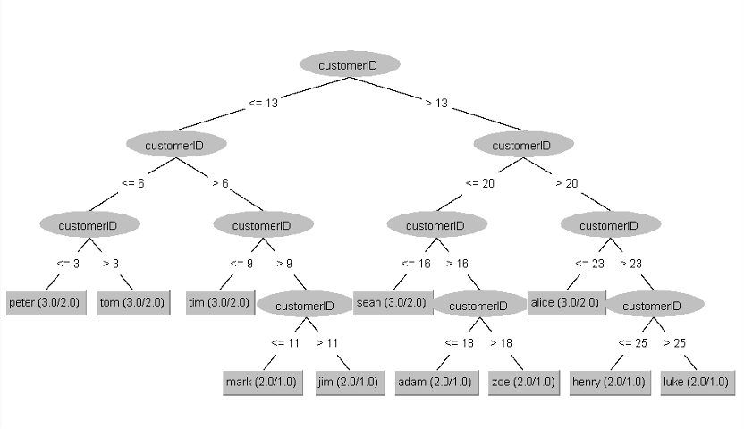
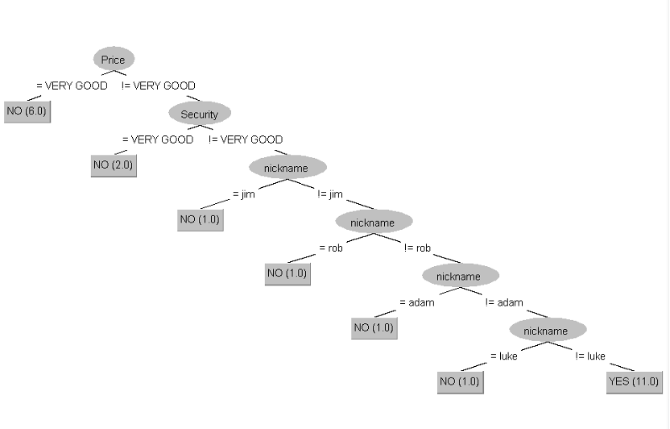

{% extends 'layouts/default/page.html' %}
{% load i18n %}
{% block content %}
{% if request.user.is_authenticated %}
{% trans 'Please see below the outputted results from the customer churn model.' %}
Regression Trees


{% else %}
{% trans 'You are not logged in. Log in to view customer churn results' %}
{% endif %}
{% endblock %}